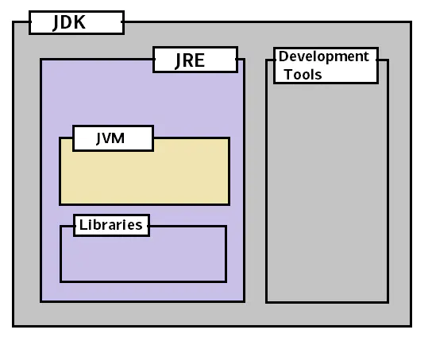

JDK、JRE、JVM的关系
JDK
JDK(Java Development Kit) 是用于开发 Java 应用程序的软件开发工具集合，包括 了 Java 运行时的环境(JRE)、解释器(Java)、编译器(javac)、Java 归档 (jar)、文档生成器(Javadoc)等工具。简单的说我们要开发Java程序，就需要安 装某个版本的JDK工具包。
JRE
JRE(Java Runtime Enviroment )提供 Java 应用程序执行时所需的环境，由 Java 虚拟机(JVM)、核心类、支持文件等组成。简单的说，我们要是想在某个机器上运 行Java程序，可以安装JDK，也可以只安装JRE，后者体积比较小。
JVM
Java Virtual Machine(Java 虚拟机)有三层含义，分别是:
- JVM规范要求
- 满足 JVM 规范要求的一种具体实现(一种计算机程序)
- 一个 JVM 运行实例，在命令提示符下编写 Java 命令以运行 Java 类时，都会创建一 个 JVM 实例，我们下面如果只记到JVM则指的是这个含义;如果我们带上了某种JVM 的名称，比如说是Zing JVM，则表示上面第二种含义
JDK 与 JRE、JVM 之间的关系
就范围来说，JDK > JRE > JVM:
- JDK = JRE + 开发工具
- JRE = JVM + 类库

三者在开发运行Java程序时的交互关系:
简单的说，就是通过JDK开发的程序，编译以后，可以打包分发给其他装有JRE的机器上去运行。而运行的程序，则是通过java命令启动的一个JVM实例，代码逻辑的执行都运行在这 个JVM实例上
Java程序的开发运行过程为:
我们利用 JDK (调用 Java API)开发Java程序，编译成字节码或者打包程序 然后可以用 JRE 启动一个JVM实例，加载、验证、执行 Java 字节码以及依赖库， 运行Java程序而JVM 将程序和依赖库的Java字节码解析并变成本地代码执行，产生结果
jdk安装、环境配置、管理（mac OS）
使用jenv管理jdk版本
（1）oracle官网下载需要的jdk版本（这里使用解压缩版本）
（2）下载jenv
（2）将jdk添加到jenv管理
1 | # jenv add $JAVA_HOME |
（3）查看、切换、设置
1 | # 查看现有jdk版本 |